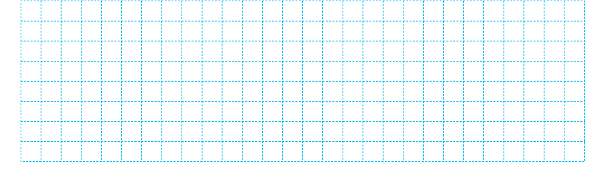
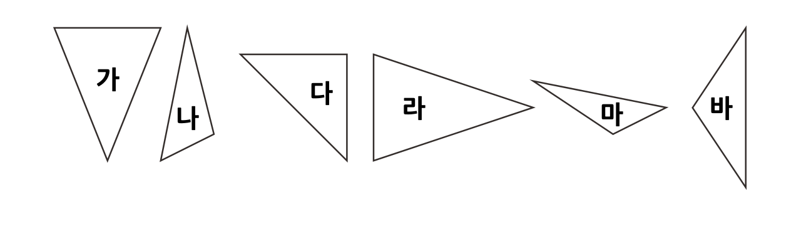
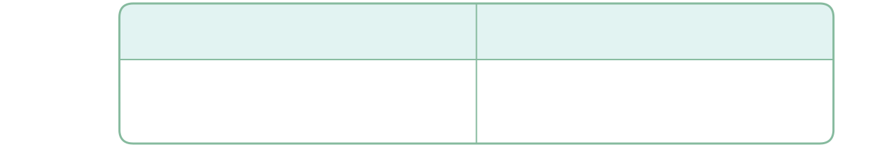

1
삼각형을 분류해 봅시다.
 

삼각형을 어떻게 분류했는지 말해 보세요.
직각이 있는 삼각형 다와 직각이 없는 삼각형 가, 나, 라, 마, 바로 분류했습니다.
두 변의 길이가 같은 삼각형 가, 다, 라, 바와 변의 길이가 모두 다른 삼각형 나, 마로 분류했습니다.
한 걸음 더
한 걸음 더
삼각형의 두 변의 길이가 같은지 어떻게 알 수 있을까요?
자로 길이를 재어 봅니다.
모눈 눈금의 간격으로도 변의 길이가 같은지 알 수 있습니다.
어떤 방법으로 삼각형의 두 변의 길이를 비교하는 것이 좋을까요?
눈이나 모눈 눈금의 간격으로 삼각형의 두 변의 길이를 비교하면 빨리 비교할 수 있어 편리합니다.
자로 재는 것이 정확합니다.
눈이나 모눈 눈금의 간격으로 쉽게 비교하고, 정확하지 않을 때는 자로 재어 비교하는 것이 좋을 것 같습니다.